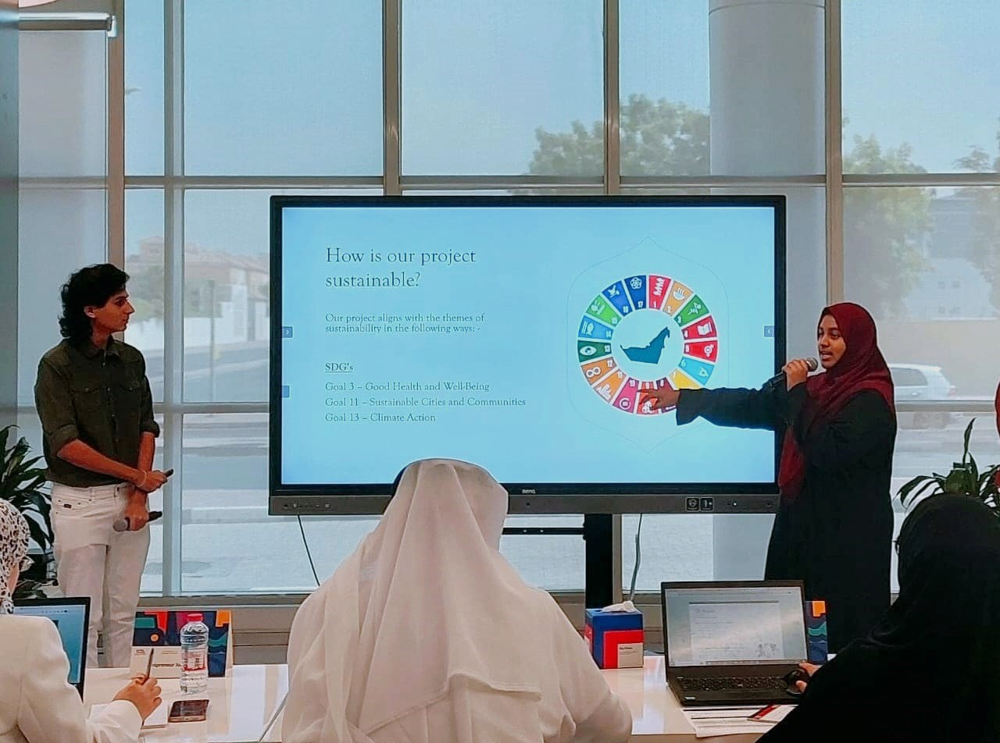
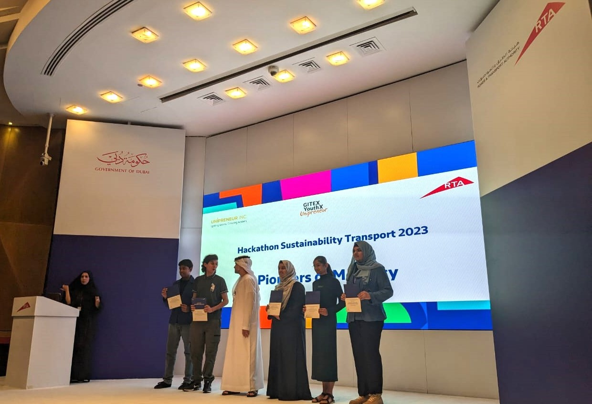
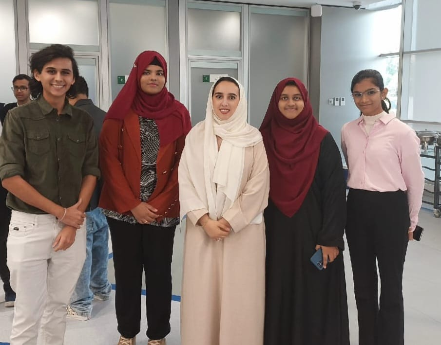
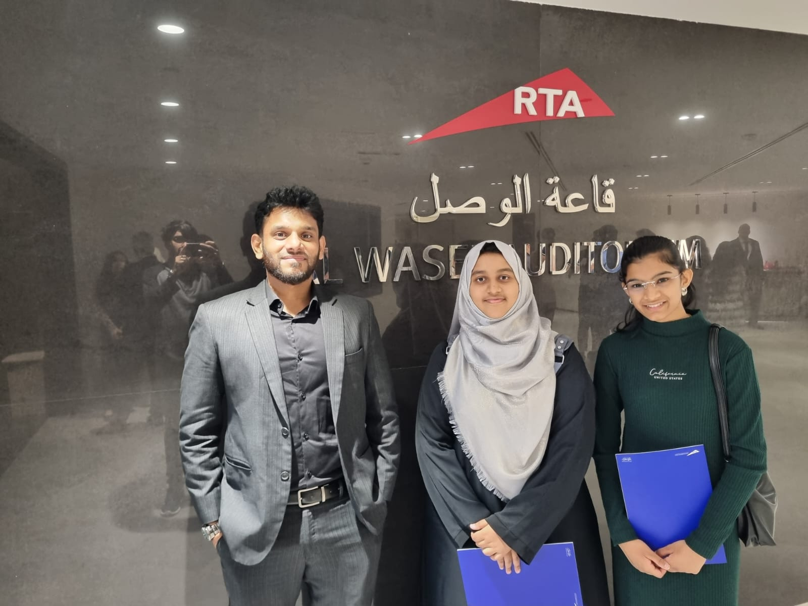

"The RTA Sustainability Hackathon, organized by Unipreneur.inc, RTA Dubai,
and GITEX YouthX, was a remarkable event dedicated to innovation.
Amidst the energy of the hackathon, our team quickly formed, fueled by a shared passion
for sustainable transportation. With two weeks at our disposal, we delved into crafting
our solution, guided by the theme of sustainable transportation.
The culmination of our efforts resulted in The Green Step, an innovative application
promoting walkability and advocating for public transportation usage.
Presenting our solution was an exhilarating experience, met with positive feedback
from the judges.
Participating in the hackathon was not just about competition; it was an opportunity
for growth and collaboration, leaving us with invaluable insights and memories."
Hajara Sabnam

Finalist in RTA Sustainability Hackathon



